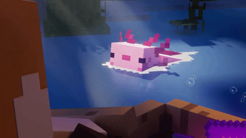

Bedrock Edition
Minecraft: Bedrock Edition (раніше Minecraft PE) — кросплатформна версія гри Minecraft. Розробляється Mojang з 2011 — дотепер для Android, iOS, Windows 10, Nintendo Switch, Xbox., PlayStation 4.
Версії
2011 — Minecraft PE 0.1
2012 — Minecraft PE 0.5
2013 — Minecraft PE 0.8
2014 — Minecraft PE 0.10
2015 — Minecraft PE 0.13
2016 — Minecraft PE 0.16
2017 — Minecraft PE 1.0
2018 — Minecraft Bedrock Edition 1.2 — 1.8
2019 — Minecraft Bedrock Edition 1.9 — 1.14
2020 — Minecraft Bedrock Edition 1.15 — 1.16
2021 — Minecraft Bedrock Edition 1.17
2022 — Minecraft Bedrock Edition 1.18 — 1.19
Дата випуску
2011 — Pocket Edition
2014 — Xbox One Edition
2015 — Windows 10 Edition
2017 — Nintendo Switch Edition
2019 — PlayStation 4 Edition
Історія
У лютому 2011 року стало відомо, що Арон Неймінен, один зі співробітників Mojang, займається розробкою iOS-версії Minecraft для iPhone та iPad. Засновник компанії, Маркус Перссон, заявив, що iOS-видання не отримуватиме кожне оновлення так швидко, як версії для персональних комп'ютерів. На своїй твіттер-сторінці 8 жовтня 2011 року Єнс Бергенстен підтвердив, що Pocket Edition розроблюється з допомогою мови C++, а не Java, а тому відеогра працюватиме й на платформі iOS. Pocket Edition для iOS вийшла 17 листопада 2011 року. З кожним оновленням Pocket Edition все ближче наближалася до оригінальної відеогри для комп'ютерів.

10 грудня 2014 року, Pocket Edition була випущена для Windows Phone, незадовго після придбання Mojang корпорацією Microsoft. Pocket Edition 1.0 вийшла з альфа- та бета- тестувань 19 грудня 2016 року лише для iOS та Android. Проте вже на початку 2017 року Microsoft припинила підтримку останніх Windows Phone-версій Minecraft: Windows Phone 8.1 та Windows 10 Mobile, які так і не отримали PE 1.0. На основі Pocket Edition також працюють версії відеогри для Fire OS та Fire TV від інтернет-компанії Amazon, Samsung Gear VR, Apple TV.
20 вересня 2017 року з великим оновленням для Minecraft під назвою «Better Together», Mojang об'єднала версії для платформ Android та iOS (Minecraft: Pocket Edition), віртуальної реальності, Windows 10 та Xbox One (Minecraft: Xbox One Edition) під спільною назвою Minecraft, прибравши підзаголовок Pocket Edition. Проте звідтоді Minecraft перестала підтримувати кросплатформну гру.
Під назвою Bedrock Edition об'єднують версії Minecraft з версії 1.2., засновані на гральному рушієві Bedrock Engine, написаному не мовою Java. До затвердження назви Bedrock Edition гра існувала у виданнях — Windows 10 Edition, Pocket Edition, Xbox One Edition, Nintendo Switch Edition. Утім, Java Edition, Legacy Console Edition, Education Edition, China Edition, Pi Edition, Xbox 360 Edition не належать до Bedrock Edition. Ідеї створити Bedrock Edition виникли у власників телефонів, комп'ютерів та ігрових консолей, щоб вони мали можливість грати разом, незалежно від пристроїв.
У жовтні 2021 року щомісячна авдиторія Minecraft досягнула 141 млн гравців. За даними Mojang, усього продано 238 млн копій гри.
У квітні 2023 року, розслідувачі групи Bellingcat з'ясували, що канали з «секретними даними НАТО» були створені для комп'ютерної гри Minecraft. Про це йшлося у розслідуванні групи Bellingcat від 9 квітня. Під час суперечки про ігрові карти та хід великої війни в Україні один із геймерів відправив 10 «таємних» файлів. Документи, за даними команди, почали з'являтися в мережі ще в січні 2023 року на деяких Discord-серверах, в тому числі Minecraft Earth Map, де була функція для спілкування з кількома користувачами в окремих каналах.